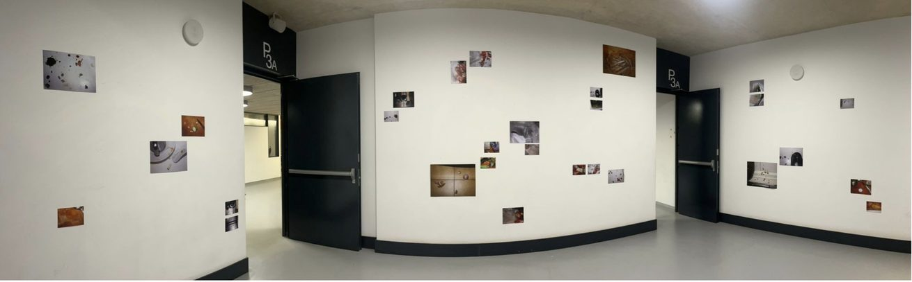
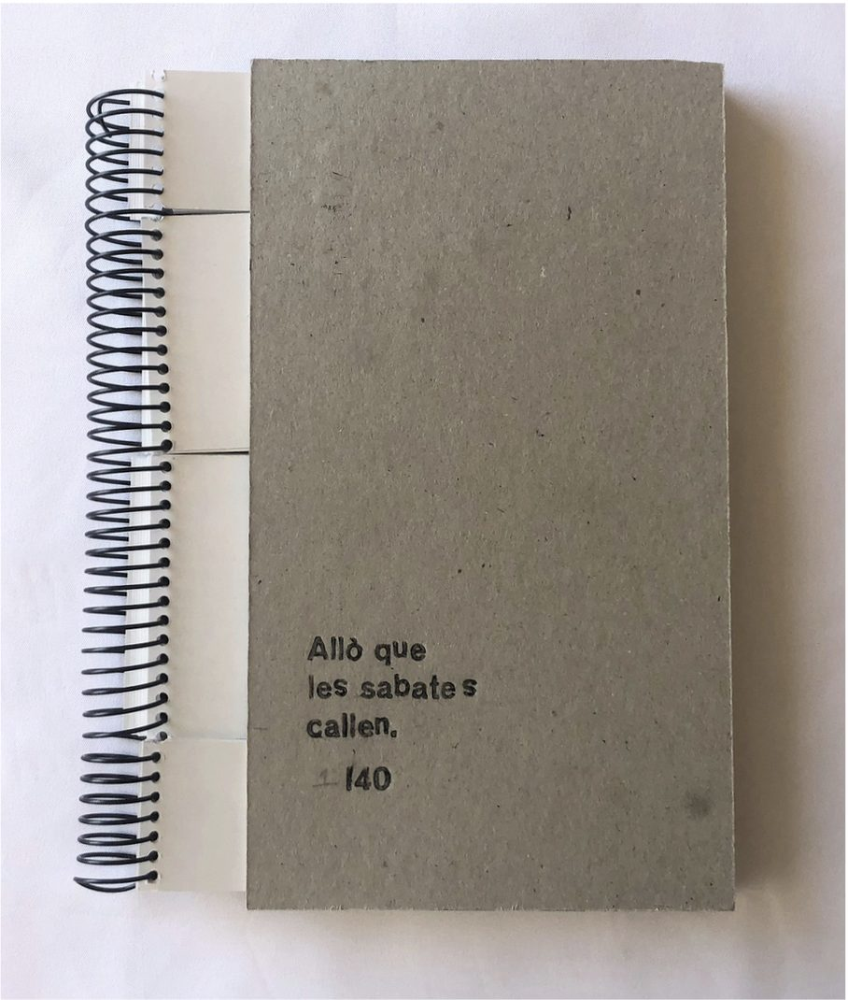
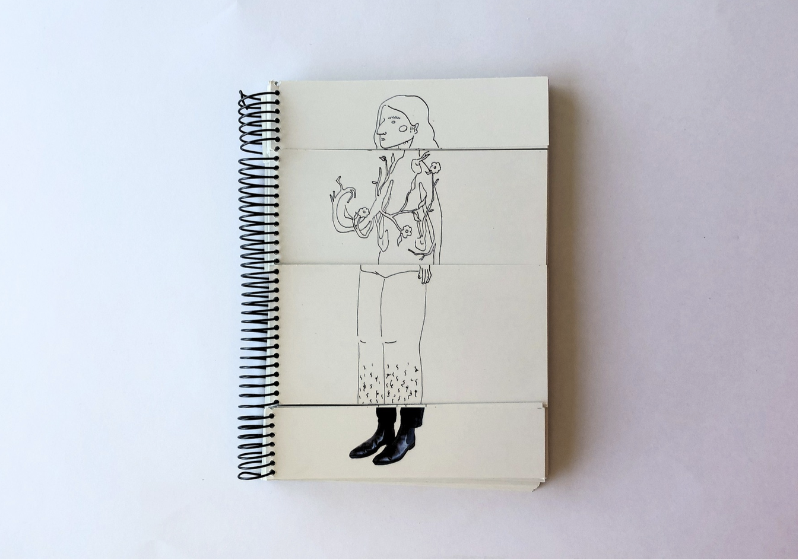
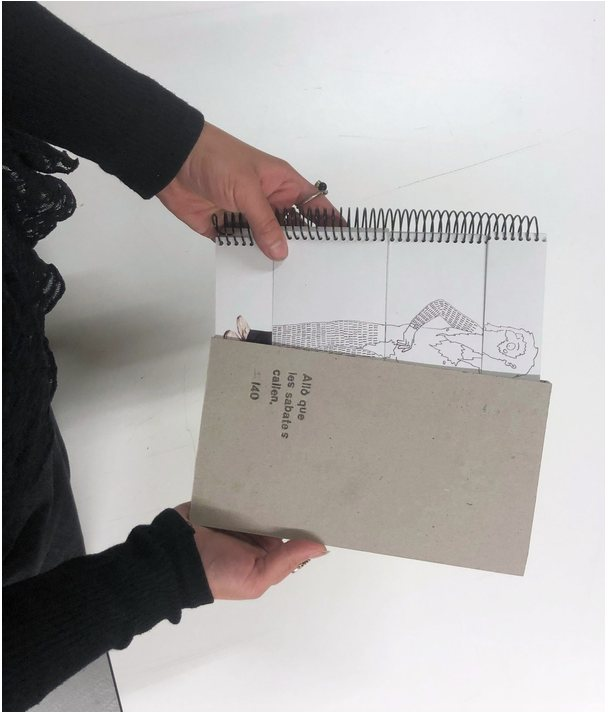
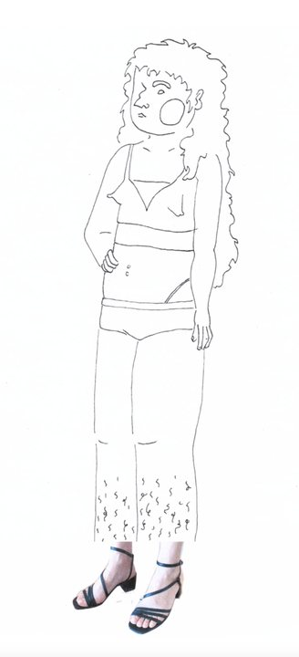
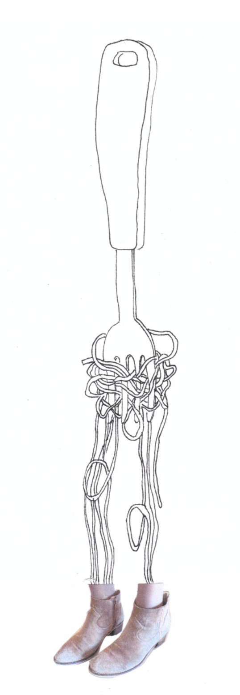
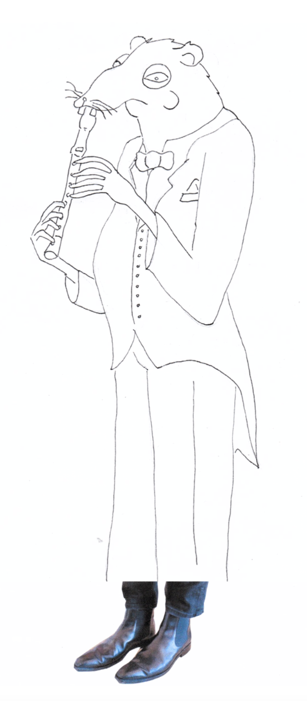
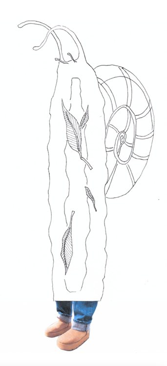

Allò que les
sabates callen.
El projecte neix de les llargues esperes al transport públic, on transformo l’avorriment en un joc d’imaginació: observar les sabates de les persones i imaginar com són a partir del seu calçat. A partir de 40 fotografies de sabates de diferents estils, creo il·lustracions dels personatges que m’imagino. Les fragmento en quatre parts (cap, tors, cames i peus) per permetre múltiples combinacions. D’aquesta manera, converteixo un joc personal en una proposta interactiva que convida els altres a crear els seus propis personatges i transformar el temps d’espera en un moment de creativitat.



Allò que les sabates callen. 2026.
Llibre fragmentat (Tipus paper).
Edició 1/40 exemplars.
21 x 14.8 cm




